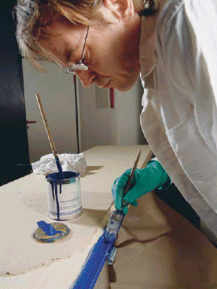
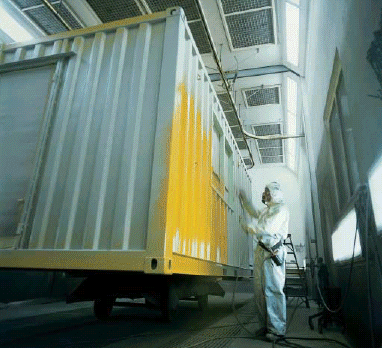

Für die Verarbeitung von Beschichtungsstoffen durch das Maler- und Lackiererhandwerk werden folgende Applikationsverfahren angewandt (geordnet nach Einsatzhäufigkeit):
Diese in der handwerklichen Verarbeitung immer noch vorherrschenden Applikationstechniken ermöglichen Auftragswirkungsgrade von nahezu 100%. Der Materialdurchsatz (Materialverbrauch pro Zeit und Person) ist in der Regel gering, wenn nicht mit großen Werkzeugen wie Flächenstreicher, Deckenbürsten oder Farbrollern mit pumpengeförderter Farbzufuhr gearbeitet wird. Durch Streichen oder Rollen können höherviskose Materialien verarbeitet werden als durch Spritzen oder Tauchen, d. h., bei lösemittelverdünnbaren Lacken und Farben können Produkte mit höherem Festkörperanteil verarbeitet werden.
Im handwerklichen Bereich wird überwiegend das Airless-Spritzverfahren eingesetzt. Weitere Spritzverfahren sind das Niederdruckspritzen - einschließlich HVLP (High Volume Low Pressure) -, das Airless-Luft-Spritzen (Air-Mix) sowie das konventionelle Hochdruck-Druckluftspritzen. Teilweise wird mit Hilfe von Elektrostatik, d. h. im elektrischen Feld, versprüht.
Mit Airless-Pumpen werden höchste Materialdurchsätze erreicht. Die Förderleistungen betragen bis ca. 45 l/min. Es können im Vergleich zu den anderen Spritzverfahren auch relativ hochviskose Materialien in dünner Schicht auf Verlauf versprüht werden. Das Hochdruck-Druckluftspritzen wird nur für Lacke und Lackfarben eingesetzt.
Das Problem bei der Spritzapplikation ist der unvermeidliche Materialverlust durch den Overspray, der lungengängiges Sprühaerosol enthält. Dieser ist bei den Airless- oder Niederdruck-Spritzverfahren sowie bei der elektrostatisch unterstützten Versprühung geringer als bei dem Hochdruck-Druckluftspritzen.
Insbesondere für die Verarbeitung von Putzen und Fußbodenbeschichtungen sowie von Spachtelmassen spielt die Applikation mit Hilfe von Spachtelwerkzeugen eine große Rolle. An Wandflächen werden überwiegend höherviskose, plastisch verformbare Materialien mit Spachtelwerkzeugen aufgetragen. Auf Bodenflächen werden mit Spachteln auch sehr dünnflüssige Imprägnierungen oder selbstverlaufende Beschichtungsstoffe bzw. Nivelliermassen aufgetragen. Bei dem Auftrag dicker Schichten können sehr hohe Materialdurchsätze erreicht werden.
Die Tauchapplikation wird im Maler- und Lackiererhandwerk fast nur noch für die Imprägnierung von Fenstern und ähnlichen Bauteilen eingesetzt. Es werden lösemittelhaltige, teilweise auch wasseremulgierte Imprägnierungen und Tauchfüller appliziert. Die Heizkörperlackierung durch Fluten ist kaum mehr von Bedeutung, da die Bauteile meist fertig lackiert montiert werden.
Der Einsatz der Pulverlackierung im handwerklichen Bereich ist selten. Eine Farbmischung durch den Verarbeiter ist bei Pulverlacken nicht mehr möglich und Farbwechsel sind aufwendig. Für die elektrostatische Versprühung ist ein elektrisch leitfähiger Untergrund erforderlich. Die zu lackierenden Teile müssen für die relativ hohen Einbrenntemperaturen der Pulverlacke (150 - 200 °C) geeignet sein. Der Vorteil der Pulverlackierung liegt in der lösemittelfreien Verarbeitung. Es werden nahezu 100% Festkörper aufgetragen. Der handwerkliche Verarbeiter muss sich aber vor Staubemissionen schützen.
